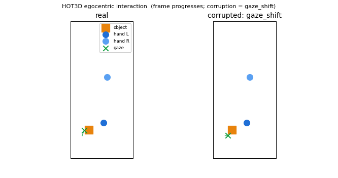
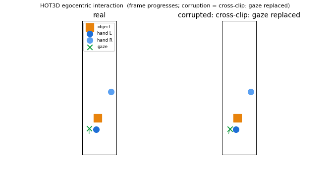
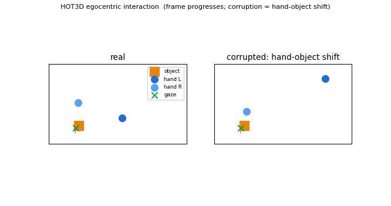
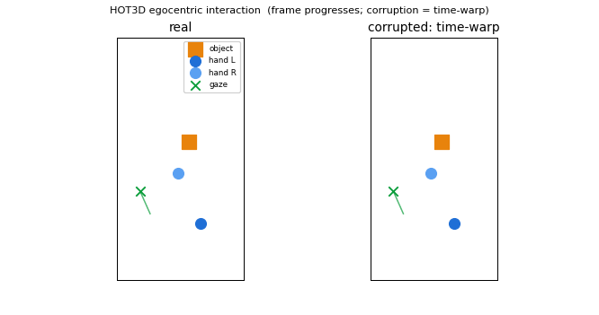

HOT3D provides interaction trajectories (no RGB in this subset), so each clip is visualized in the egocentric image plane. Left = the real clip, right = a corrupted variant. Watch how the corruption breaks the interaction.
■ object ● hands ✕ gaze (ray from the head centre). A plausible clip has the gaze tracking the hand/object being manipulated.

The green gaze marker/ray is temporally shifted, so it no longer tracks the hand and object at the right moment. Hand and object motion are unchanged, which is why a hand-object-only model cannot notice this.

The gaze trajectory is replaced by a real (smooth) gaze trace from a different clip, so it points at unrelated locations. Only a model that compares gaze against hand/object can flag this.

The hand is time-shifted relative to the object, breaking hand-object synchrony. This is visible in hand/object motion, so all models catch it.

The whole clip is non-linearly re-timed (unnatural speed profile) while all modalities stay in sync; it looks like plausible variable-speed motion, so hand-object-only stays near chance.
Model: hand-object + gaze + head/camera. Full numeric success/failure scores are in the accompanying report (Results tables).